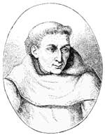

Aralarında Aristo (MÖ 384-322) ve Platon’un (MÖ 429-347) bulunduğu Antik Yunan filozoflarınının yeniden keşfedilmesi ile birlikte, 12. ve 13. yy’larda Avrupa’da entelektüel bir uyanış dönemine girildi. Bu dönemde kurulan dünyanın pek çok önemli üniversitesi arasında Cambridge (1209) ve Sorbonne (1257) da bulunmaktadır.
Avrupa biliminin uyanışında çok az yazarın Roger Bacon (1214-1292) kadar büyük bir rolü olmuştur. Bir İngiliz keşişi olan Bacon, Orta Çağ’da Avrupa entelektüel dünyasının nefes almasına katkıda bulunmuştur. Bacon önemli bir filozoftu. İbn-i Sina (980-1037) ve İbn-i Rüşd (1126-1198) gibi Arapça konuşan yazarlar başta olmak üzere Müslüman düşünürlerin ateşli bir savunucusuydu.

Bacon’un kesin doğum tarihi bilinmese de 1214-1220 yılları arasında doğduğu tahmin edilmektedir. İngiltere’deki Ilchester’da dünyaya geldi. Hayatının ilk dönemine ilişkin kayıtlar bulunmamakla birlikte varlıklı bir ailenin çocuğu olduğuna inanılmaktadır. Oxford ve Paris’te eğitim gördü. 1256 ya da 1257 yılında Paris’teki Fransiscan tarikatine katıldı.
Sıkı bir Fransiscan olmasına rağmen Bacon, hayatının kalan kısmı boyunca dini düzenle ilgili sorunlar yaşadı. Fransiscanlar keşişlerin izinsiz yayın yapmalarını yasaklıyordu. Bacon bu yasağı birkaç kez çiğneyecek ve 1266 yılında keşişliğinin ilk on yılının hapislikten farksız olduğundan şikayet edecekti.
Bacon yazılarında arkadaşlarına ağır eleştiriler yöneltti. Dönemin bilginlerinin geleneksel bilgeliğe ve eski kaynaklara fazla güvendiklerini ileri sürdü. Bilimsel ve felsefi görüşlerini asla sorgulamıyorlardı. Bacon ise tam aksine deneysel bilimin öncü savunucuları arasında yer aldı. Çağdaşlarını Arap yazarların metinleri gibi geleneksel olmayan kaynakları incelemeye yöneltti. Antik Yunan yazarlarının Avrupa’ya tanıtılması büyük ölçüde bu Arap yazarların başarısıydı (Gerçekten de Avrupa üniversitelerinde dolaşan pek çok temel metin Yunanca orijinalleri yerine Arapça’dan çevrilmişti.).
Bacon, 1272 yılında felsefi meseleleri göz ardı ettiğine şahit olduğu din dünyasını eleştiren Compendium Studii Philosophiae adlı çalışmasını yayınladı. Kitap sapkınlıkla suçlandı. Bacon’un bu nedenle zindana atıldığı tahmin edilmektedir. 1280 yılında İngiltere’ye döndü ve daha sonra orada öldü.
Ek Bilgiler
1- Arap yazarlardan etkilenen Bacon, astrolojiye inanıyordu. Kilise astrolojiye inanmayı yasaklayınca (1277) Bacon tutuklandı.
2- Her ne kadar kitapta adı geçmese de Bacon, İtalyan yazar Umberto Eco’nun (1932-) “The Name of the Rose” (1980) (Gülün Adı) romanındaki temel karakterlerden birisidir.
3- Bacon’ın barutu keşfettiğini iddia eden yaygın bir kanaat bulunmaktadır. Bu hikaye doğru değildir. Gerçekte, Bacon yüzlerce yıl önce Çinli bilim adamlarının keşfettiği barutu Avrupa’ya tanıtan kişidir.